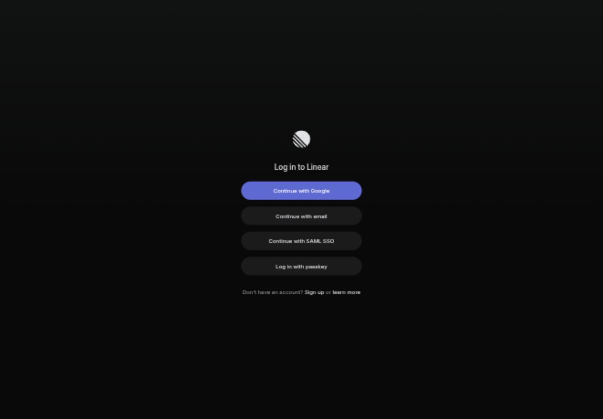
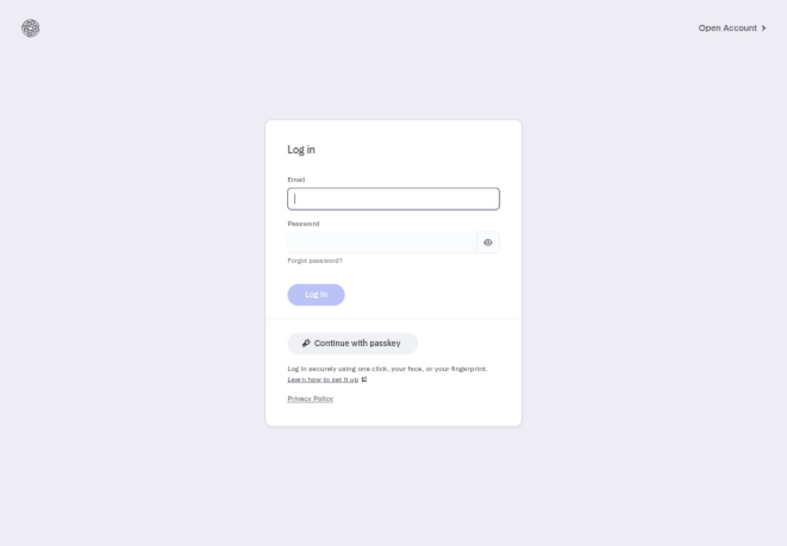
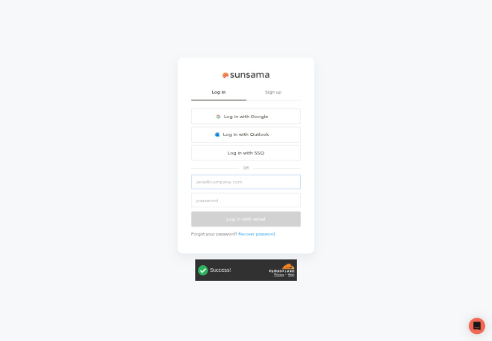
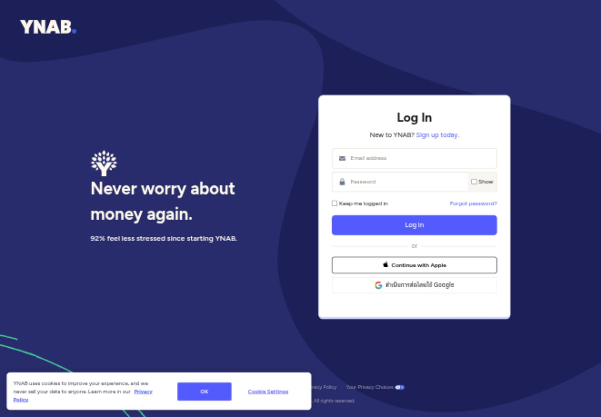
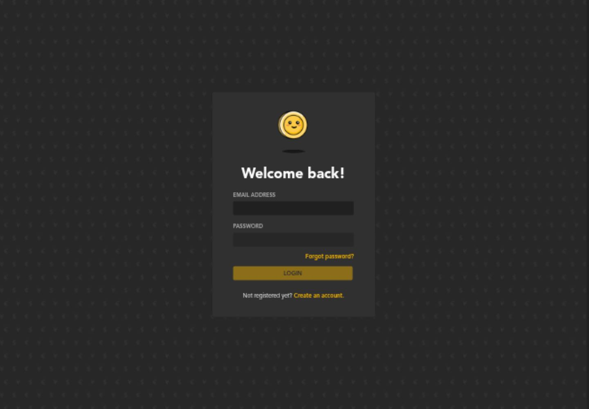
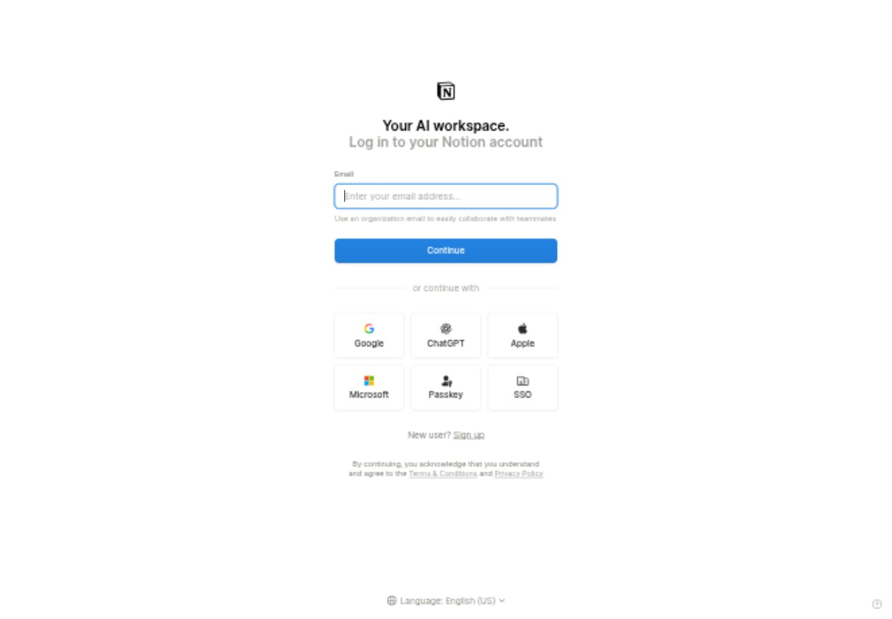

Aegis Focus
A central form with quiet orbital linework. Clear access from Linear and Mercury, recognizable branding from Lunch Money.
LOGIN RESEARCH · 28 SEPTEMBER 2026
Six real sign-in pages. Three composition ideas. One Aegis identity: the original mark, charcoal, amber, teal, Syne and Inter.
A central form with quiet orbital linework. Clear access from Linear and Mercury, recognizable branding from Lunch Money.
A YNAB-like separation of brand and access. Familiar to our first iteration, but asks returning users to revisit the product story.
A warm ivory form inside Aegis's dark world. Strong contrast from Mercury and Sunsama, with a larger departure from Meridian.
Composition sketches, not functioning login forms. Aegis Focus was approved by the owner on 28 September 2026 and is implemented in the local preview.
Each page was opened and visually inspected. These captures document the references; their logos, claims and authentication methods are not part of Aegis.

Observe: A small brand mark and focused method stack on an open dark canvas.
Use: Central focus and short copy. Keep Aegis's two-field flow instead of adding another email step.
View its email step →
Observe: A defined form surface, explicit labels, password reveal and separated secondary help.
Use: Form boundaries and hierarchy. No banking claims, passkeys or invented recovery.

Observe: A compact brand-led card with login/signup choice and grouped provider methods.
Use: An obvious signup destination and separated real alternatives. Aegis keeps its existing providers.

Observe: Strong identity around a clean access panel; password visibility is close to the field.
Use: Keep the Aegis world outside the form. Leave YNAB's statistics and unsupported account features behind.

Observe: Recognizable brand artwork above a short greeting; yellow carries the primary action.
Use: Aegis's unchanged icon and amber action. No mascot, patterned wallpaper or animation.

Observe: A single primary flow with other methods and signup clearly separated.
Use: Stable hierarchy on desktop and mobile. No copied consent language or unavailable sign-in options.
Original identity, a compact access panel, static orbital linework, and the same form order on mobile.
THE AEGIS ADAPTATION
The original icon stays untouched. Static orbital linework carries the amber/teal character around the form. The planner demonstration stays on the landing page. Existing password visibility, errors, loading and authentication behavior carry forward.
Open the working sign-in page ↗